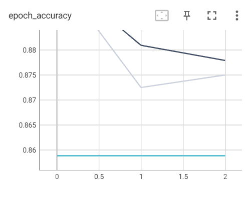
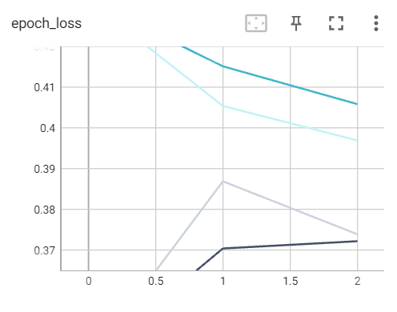

<!DOCTYPE html>
<html lang="en"></html>
<!--
	Created by Katie Lansing, Sakhi Naik, and Casey Ford
-->

<html>
	<head>
		<title>CS414 ATIA</title>
		<meta charset="utf-8" />
		<meta name="viewport" content="width=device-width, initial-scale=1, user-scalable=no" />
		<meta name="description" content="Static Website for Machine Learning 414 Project: AmITheAsshole">
    	<meta name="author" content="Katie Lansing, Sakhi Naik, Casey Ford">
		<link rel="preconnect" href="https://fonts.googleapis.com">
		<link rel="preconnect" href="https://fonts.gstatic.com" crossorigin>
		<link href="https://fonts.googleapis.com/css2?family=Poppins:wght@100;200;300;400;500;600;700;800;900&display=swap" rel="stylesheet">
		<link rel="shortcut icon" href="websiteImages/siteLogo.png" type="image/x-icon">


		<!-- Bootstrap core CSS -->
		<link href="vendor/bootstrap/css/bootstrap.min.css" rel="stylesheet">


		<!-- Additional CSS Files -->
		<link rel="stylesheet" href="assets/css/fontawesome.css">
		<link rel="stylesheet" href="assets/css/templatemo-digimedia-v1.css">
		<link rel="stylesheet" href="assets/css/animated.css">
		<link rel="stylesheet" href="assets/css/owl.css">
		<style type="text/css">
		    h1, h2, h4 {
		    	text-align: center;
		    }
			h3 {
				font-size: 20px;
		    	text-align: center;
		    }
			p{
				text-align: left;
			}
			hr {
				height:5px;
				border-width:0;
				background-color:#00A4BD;
			}

		 </style>
	</head>

<body>
	<!-- Wrapper -->
	<div id="wrapper">

		<!-- Header -->
		<header>
			<h1 class="header">AmITheAsshole Learning Model</h1>
			
			<h2>Welcome to our github website for our Intro to Machine Learning final project! </h2>
			<h4>This project was created by Casey Ford, Sakhi Naik, and Katie Lansing </h4>
			<hr>
		</header>
		
		<!-- Main -->
		<div id="main">
			<hr>
			<!-- Description -->
			<article id="desc">
				<h3 class="major">Project Description</h2>
				<p><b>Problem Statement:</b> Our project's goal is to use Machine Learning to predict the sentiment towards a Reddit post on the subthread r/AmITheAsshole. </p>
				<p>Real world applications of this project would include predicting how people react to internet text communcation</p>
			</article>
			<hr>
			<!-- Data Collecting -->
			<article id="data">
				<h3 class="major">Data Collecting</h2>
				<p><b>Scraping:</b> We used python script main.py to scrape the target subreddit and get posts. </p>
				<p>Our data is supervised and used the ground-truth labels of "NTA" and "YTA", meaning "Not the Asshole" and "You're the Asshole" respectively.</p>
				<p><b>Set Distrubtion:</b> We decided to implement an 80-10-10 distribution for our training, validation, and test sets.</p>
				<p>The dataset we created consisted of 3,300 labeled samples created from reddit posts!</p>
			</article>
			<hr>
			<!-- Model -->
			<article id="model">
				<h3 class="major">Pre-Trained BERT Model</h2>
				<p>We used a pre-trained Bidirectional Recurrent neural network called BERT for our machine learning model because Natural Language Processing can be a complex task!</p>
				<p>The specific BERT model we used was a BERT base uncased model which is a masked language model and outputs a label of "NTA" and "YTA" for each post.</p>
				<p>See our Excutive Report and Google Colab for more information!</p>
			</article>
			<hr>
			<!-- Training & Tuning -->
			<article id="train&tune">
				<h3 class="major">Training and Tuning</h2>
				<p>The BERT model is pre-trained so the training we performed was apply the model to our dataset. We used hyperparameter values for the epochs, batches, and learning rate that were within the recommended range of a BERT model.</p>
				<p>Our model's TensorBoard evaluations are included below:</p>
				<table>
					<tr>
					  <td></td>
					  <td></td>
					</tr>
				</table>
			</article>
			<hr>
			<!-- Final Deliverable -->
			<article id="results">
				<h3 class="major">Final Results</h2>
				<p style="text-align: center;">Our final deliverables are linked below! </p>
				
				<h3 style="font-size: 17px; text-align: center;"><a href="https://github.com/kt-lansing/AmITheAsshole_ML">Github Repository</a></h3>
				<p style="text-align: center;">This link takes you to our project's github repository. All of our relavent project files are located there.</p>


				<h3 style="font-size: 17px; text-align: center;"><a href="https://colab.research.google.com/drive/1_2LDEkCzK8dec0BgSG2hT2ipp2GhPu_g?usp=sharing">Google Colab</a></h3>
				<p style="text-align: center;">This link takes you to the Google Colab for our Machine Learning Model. You can find all of the code and more detailed information about functionality there.</p>

				<h3 style="font-size: 17px; text-align: center;"><a href="https://docs.google.com/document/d/1suVA3QDMC7Fo24NwM12jXTQk4kxKFoOTxMmOEuo1sjU/edit?usp=sharing">Executive Report</a></h3>
				<p style="text-align: center;">This link takes you to the Executive Report for our project. There you can find more in-depth information about our Project's process and the design choices we made. This includes our Project Limitions, Future Work, and ChatGPT Usage.</p>

				<h3 style="text-align: center;"><b>Watch us Talk About Our Model!</b></h3>
			
				
				<iframe style="text-align: center;" width="560" height="315" src="https://www.youtube.com/embed/el6d6DXbpuk" title="YouTube video player" frameborder="0" allow="accelerometer; autoplay; clipboard-write; encrypted-media; gyroscope; picture-in-picture; web-share" allowfullscreen></iframe>
			</article>

		</div>
	

		<hr>
	<footer>
		<p>Copyright © 2023 CS414 AITA</p>
	</footer>
</body>
</html>
